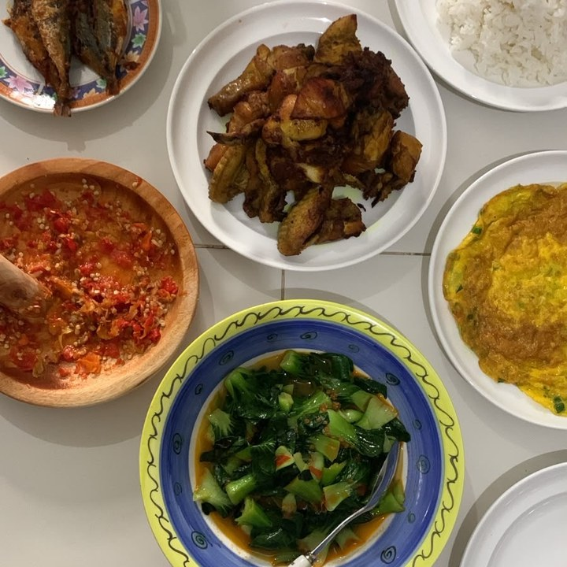
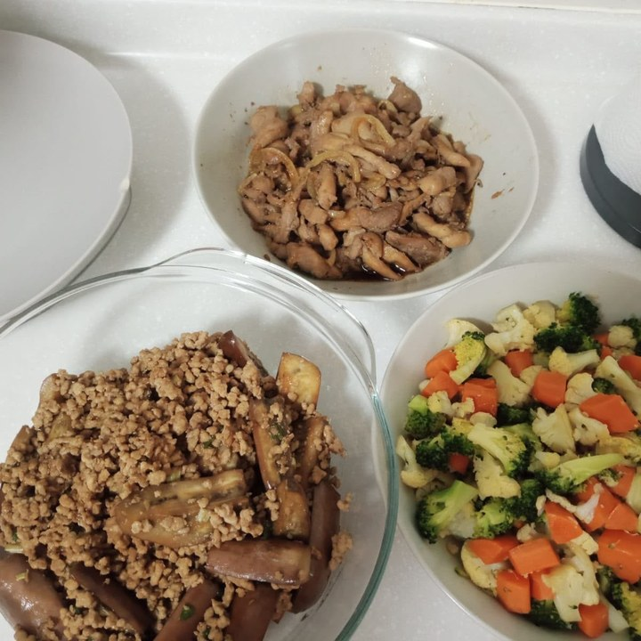
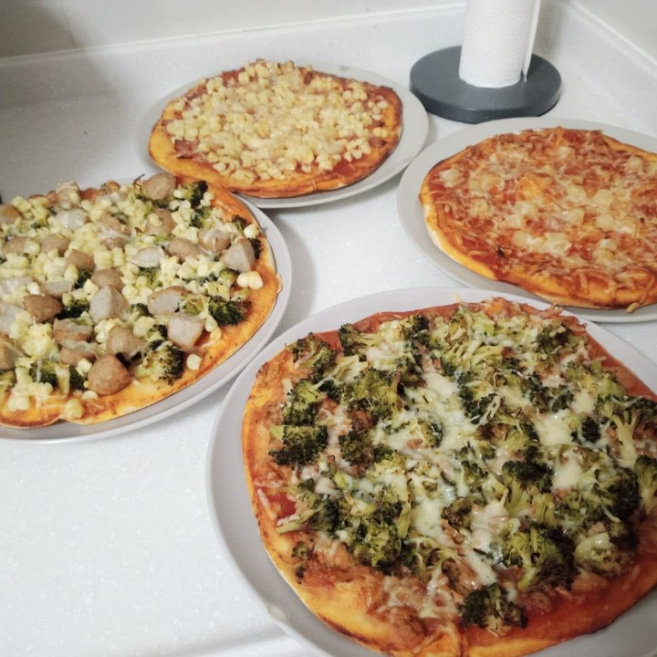
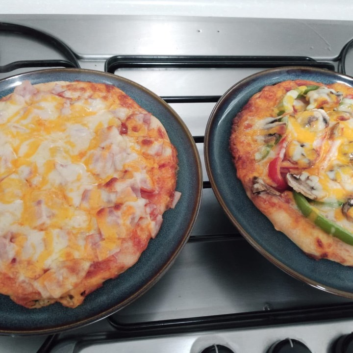

Indonesian · 43 · Children, household & cooking
Her employer wrote her a reference as she leaves, and has offered to answer questions from any family considering her. She ran that household and looked after their two boys, six and three. Before that, two years with an elderly person in Singapore, and four years with children in Indonesia.
“She was patient and kind to our young children, often going the extra mile when they were taken ill or when we just needed support during the evening.”
— Sarah, her employer this year
Trust signals
Our strongest trust signal — the family she works for now, recommending her directly. We arrange the call once a family has met her and is proceeding seriously.
At a glance
The essentials
Available from
16 December 2026. Transfer within Singapore.
Why she is available
Her employer is not working any more, so the household no longer needs a helper. They wrote her reference as she leaves and will take questions from a family considering her.
Where she is now
Since March 2026 — two working parents and two boys, six and three. Running the house, and the boys alongside it.
Two years of elderly care
2024 to 2026, her first Singapore household. It ended when that family were no longer able to keep up her salary.
Children she has cared for
Boys of six and three in the house she is in now. In Indonesia, a baby she took at two months old for two years, and children of six and four for two years after that.
Cooking
Indonesian home cooking, and her employer’s words on the rest: “able to execute on recipes well”. There are photographs further down this page.
What she is looking for
Childcare or elderly care — she is open to either, and has done both. Three children of her own in Indonesia.
Best fit
A household that wants the house run properly, with young children in it or an elderly person to look after. Her employer put the household first and the boys alongside, and that is the shape she is used to.
From Sarah’s signed letter, written this month as Yetti leaves.
She sets out the household: two working parents and two young boys, where “having a dependable and a caring helper is essential”. Over those months, she writes, Yetti “proved to be an invaluable member of our family”.
She is specific about the work: “Yetti’s primary responsibility was running our household, followed by caring for our two active boys. She ensured our house was neat, tidy and clean, as well as was able to execute on recipes well. She was patient and kind to our young children, often going the extra mile when they were taken ill or when we just needed support during the evening.”
And about how she is to work with: “Yetti has a quiet way of sharing her observations and recommendations with us without feeling intrusive. She has also always been open to feedback, taking it in her stride and adapting as needed.”
On why she is leaving: “Unfortunately due to a change in our situation, Yetti is looking for a new employer and we would like to support her as she makes this transition. As such, I welcome any questions from prospective employers about Yetti’s capabilities and our time working together.”
She closes: “We are very thankful for the time Yetti spent with us and highly appreciate her dedication and hard work.”
In Singapore since 2024, and four years with children in Indonesia before that.
In Indonesia, before Singapore. Two years with a baby she took at two months old, and two years after that with children of six and four.
2024 to 2026 — two years. Her first Singapore household, caring for an elderly person. It ended when the family were no longer able to keep up her salary.
March to December 2026. Two working parents and two boys of six and three. Her employer’s own account: running the household first, the house kept neat and clean, cooking to recipe, and the boys alongside it — including the evenings and the days they were ill. It is ending because her employer is not working any more and the household no longer needs a helper.
Where she’d suit next. She is open to either kind of work. With children: a six-year-old and a three-year-old together for most of this year, and a baby from two months old before that. With an elderly person: two years of it in her first Singapore household. In both cases she ran the house as well.
Her written reference and her full work history are available to interested families, with her consent.
Her own photographs, from the household she cooks for now.




Tell us a little about your household and we’ll be in touch within 1–2 business days. We’ll only move forward if it feels like a genuine fit.